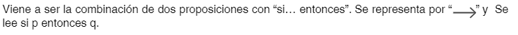
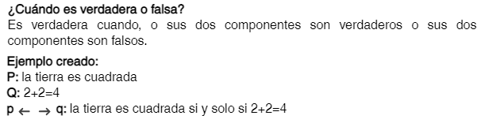

Conectivas Lógicas
Negación
Una negación es una función lógica o conectiva representada con el símbolo “”y su efecto es invertir el valor de verdad de la proposición a la que se aplica. La operación unitaria de negación, se representa por “~” y se lee “no”.

Y tiene la siguiente tabla de verdad de verdad:

¿Cuándo es verdadera o falsa?
Cuando hay un valor de verdadero su operando es falso, y cuando hay un valor de falso su operando es verdadero.
Ejemplo:
P: Hay comida para el perro.
~P: No hay comida para el perro.
Conjunción
Es una conectiva lógica que enlaza dos o más enunciados simples y cuya caracterización semántica es la siguiente:
Una conjunción de la forma “p & q”, donde “p” y “q” son cualquier enunciado, y “&” es el signo de la conjunción.


¿Cuándo es verdadera o falsa?
Es verdadera si y sólo si tanto “p” como “q” son verdaderas; y falsa si y sólo si “p” es falsa o “q” es falsa.
Ejemplo:
P: Hoy es jueves.
Q: La luna es cuadrada.
R: Mañana es viernes.
P^Q: hoy es jueves y la luna es cuadrada.
P^R: hoy es jueves y mañana es viernes.
Disyunción
Es una conectiva lógica que enlaza dos o más oraciones, mediante el conectivo lógico “V” que se lee “o”.

y tiene la siguiente tabla:

¿Cuándo es verdadera o falsa?
Es verdadera cuando por lo menos uno de sus componentes es verdadero. Es falsa sólo cuando todos sus componentes son falsos (p o q).
Ejemplo:
P: Andrés practica Taekwondo
Q: Jazmín practica Jiu-jitsu
PvQ: Andrés practica Taekwondo o Jazmín practica Jiu-jitsu.
La disyunción puede ser inclusiva o exclusiva. La caracterización semántica de estos dos tipos de disyunciones son las siguientes:


Conjunción Negativa
Es la unión de dos o más proposiciones que se lee “ni p ni q”.

Y tiene la siguiente tabla de verdad:

¿Cuándo es verdadera o falsa?
es verdadero únicamente cuando las dos proposiciones son falsas (ni p ni q), en cualquier otro caso es falsa.
Ejemplo:
P: tengo arroz.
Q: tengo aceite.
p q: ni tengo arroz ni tengo aceite.
Disyunción Exclusiva
Es la unión de dos o más proposiciones mediante el conectivo lógico “⊻” que se lee “o p o q”.

Y tiene la siguiente tabla de verdad:

¿Cuándo es verdadera o falsa?
Es verdadera la proposición cuando la primera proposición es verdadera y la segunda es falsa o cuando la primera proposición es falsa y la segunda verdadera.
Ejemplo:
P: Estoy estudiando.
Q: Estoy trabajando.
p⊻q: Estoy estudiando o solo estoy trabajando.
Condicional


Y tiene la siguiente tabla de verdad:

¿Cuándo es verdadera o falsa?
es falsa cuando la primera proposición es verdadera y la segunda es falsa. Es verdadera en cualquiera de las otras formas.
Ejemplo:
P: Si ganas la carrera.
Q: Te regalaré unas nuevas zapatillas.
p q: Si ganas la carrera entonces te regalaré unas zapatillas.
Bicondicional
Es la unión de dos proposiciones por “sí y sólo si”. Se lee p si y sólo si q.

Y tiene la siguiente tabla de verdad:

